PXLCAM
// CONCEPT
PXLCAM captures moments in deliberate low resolution with retro effects. Smaller files, smaller footprint — digital data takes energy to store and share.
Every shot is stamped with a countdown to the climate deadline. A camera is a tool for noticing the present — a reminder of the beauty of the world as it is now, worth capturing, worth protecting.
// GALLERY
Photos captured with PXLCAM.
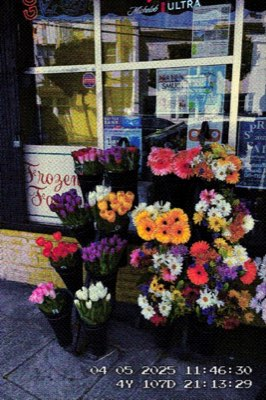
 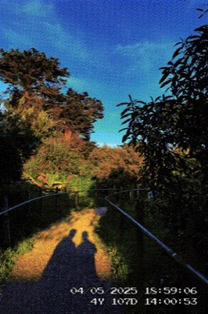
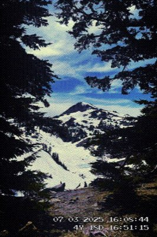
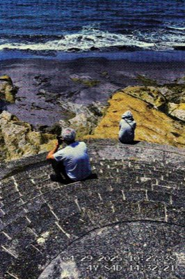
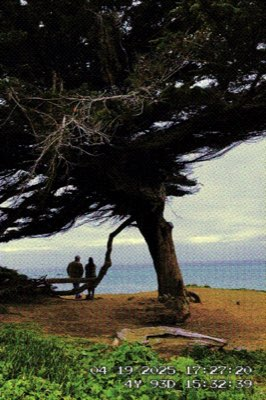
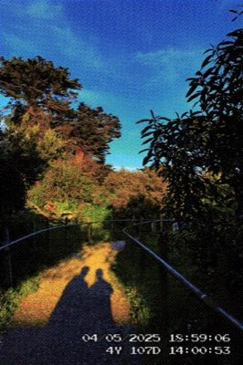
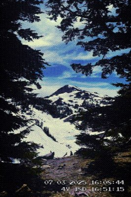
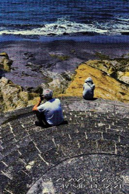
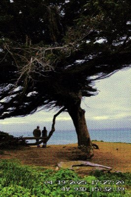
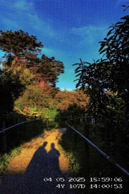
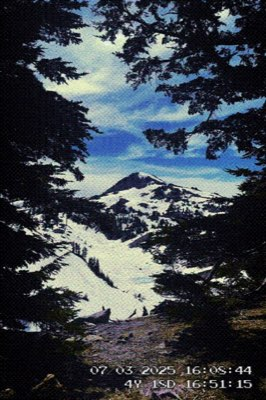
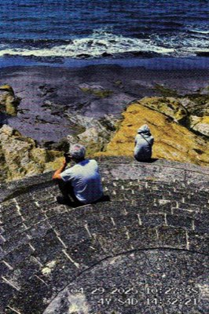
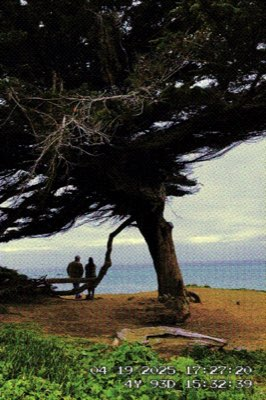
// GET UPDATES
Be the first to know when PXLCAM launches.
SIGN UP